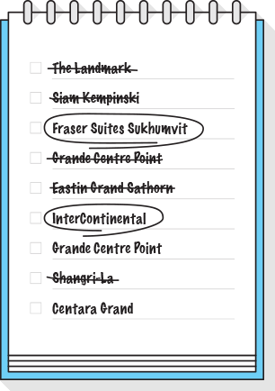
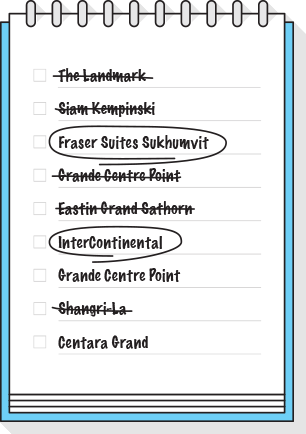
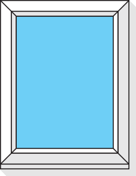
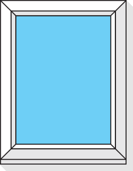

Юра сразу покупает тур: в его ситуа-
Отель центре тайской жизни: чтобы и еда, и качественный пляж, достопри-
 

 

Юра носит линзы, и у него как раз за-
Отель центре тайской жизни: чтобы и еда, и качественный пляж, достопри-


Что Юра точно не хочет упустить, так это возможность попробовать местную еду. Каждый вечер они с женой -
Каждый вечер они с женой - иногда с детьми, иногда вдвоем - отправляют в новый местный ресторан.